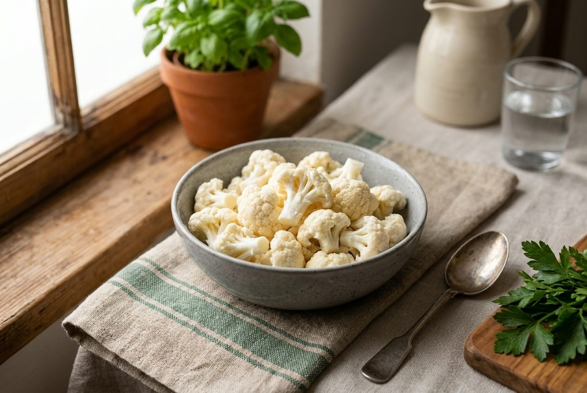
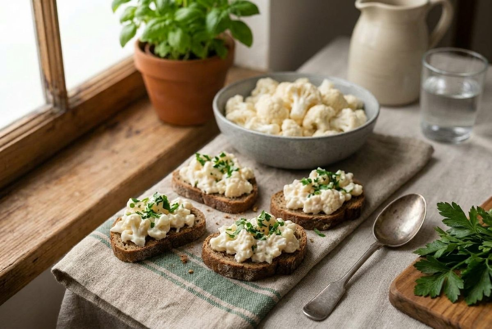

Salată de conopidă cu maioneză și usturoi sau ceapă
Salata de conopidă cu maioneză e o gustare rece simplă, care se face repede din puține ingrediente și merge de la masa de zi cu zi până la cea de sărbătoare. Secretul stă într-un singur lucru: conopida se fierbe foarte puțin, ca să rămână ușor crocantă, nu moale și apoasă.
- Preparare
- 15 minute
- Gătire
- 4 minute
- Timp total
- 20 minute
- Categorie
- Salate
- Bucătărie
- Românească
- Servire
- 6 porții
Ingrediente pentru salata de conopidă
Pentru maioneza de casă (aproximativ 3 linguri bune)
Mod de preparare
Pregătirea conopidei
- Împarte conopida în buchețele mici. Taie frunzele și partea lemnoasă a cotorului, apoi spală bine buchețelele sub jet de apă rece și scurge-le. Verifică printre ele, pentru că uneori se ascund insecte mici.
- Pune la fiert 2 litri de apă cu sarea într-o oală de aproximativ 3 litri. Când apa clocotește, adaugă conopida și fierbe-o exact 4 minute, nu mai mult.
- Mută imediat buchețelele într-un vas cu apă rece și câteva cuburi de gheață, ca să se oprească gătirea. După aproximativ 5 minute, scurge-le bine într-o strecurătoare. Înainte de a face salata, conopida trebuie să fie rece și bine scursă.

Sosul și asamblarea
- Dacă faci maioneza acasă, bate gălbenușurile cu muștarul, sare și piper. Adaugă uleiul într-un fir foarte subțire, amestecând continuu, până când sosul se leagă și devine cremos.
- Toacă mărunt ceapa sau usturoiul și verdeața. Amestecă maioneza cu smântâna sau iaurtul și cu ceapa ori usturoiul.
- Pune conopida într-un bol, adaugă sosul și amestecă ușor. Gustă și potrivește de sare și piper. Dacă preferi o textură mai fină, strivește câteva buchețele cu furculița.
- Presară verdeață deasupra și lasă salata la rece cel puțin 30 de minute înainte de servire.

Sfaturi
- Conopida are un gust pronunțat. Dacă vrei o salată mai blândă, adaugă câțiva cartofi fierți și mărunțiți.
- Ceapa roșie merge bine iarna, ceapa verde primăvara, iar usturoiul dă un gust mai intens.
- Smântâna sau iaurtul grecesc fac sosul mai ușor și mai proaspăt.
- Poți găti conopida și la aburi, aproximativ 7 minute, apoi o răcești la fel.
- Păstreaz-o la frigider, într-un vas acoperit, cel mult 2 zile.